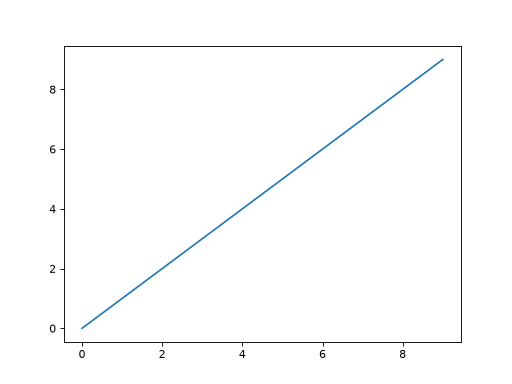

Using the nbplot directive¶
The nbplot directive is very similar to the matplotlib plot directive,
and started life as a fork of that code. It differs mainly in that its
default is to keep the name-space from one nbplot directive to the next in
a given page. It also has output defaults adapted to directive contents with
source code rather than pointing to a standalone script.
For example, here is the source for an Nbplot directive:
.. nbplot::
>>> a = 1
>>> a
1
This renders as:
>>> a = 1
>>> a
1
All Nbplot directives in a page share a namespace with the first (by default). Here is another Nbplot directive:
>>> b = a
>>> b
1
Nbplot directives can also make – plots:
>>> import matplotlib.pyplot as plt
>>> plt.plot(range(10))
[...]



Notice that the HTML version of the page contains links to high and low resolution PNG versions of the plot, and a PDF version.
The code in Nbplot directives gets executed during the page build, so your
build will detect any errors. With doctest code blocks, like the above, you
can also test the doctest output, using the Sphinx doctest builder, which
you might be able to run with:
make doctest
See the run-parts and render-parts options to run and render different
code according to your local configuration.
nbplot directive¶
A directive for including a matplotlib plot in a Sphinx document.
This directive is based on the plot directive of matplotlib, with thanks.
By default, in HTML output, nbplot will include a .png file with a link to a high-res .png and .pdf. In LaTeX output, it will include a .pdf.
The source code for the plot is inline content to the directive:. It can be with or without doctest syntax. Here’s an example without doctest syntax:
.. nbplot::
import matplotlib.pyplot as plt
import matplotlib.image as mpimg
import numpy as np
img = mpimg.imread('_static/stinkbug.png')
imgplot = plt.imshow(img)
Here’s an example with doctest syntax:
.. nbplot::
A plotting example:
>>> import matplotlib.pyplot as plt
>>> plt.plot([1,2,3], [4,5,6]) #doctest: +ELLIPSIS
[...]
Options¶
The nbplot directive supports the following options:
- format{‘python’, ‘doctest’}
Specify the format of the input. If not specified, nbplot guesses the format from the content.
- include-sourcebool
Whether to display the source code. The default can be changed using the nbplot_include_source variable in
conf.py. Any doctests in the source code will still be run by the doctest builder. include-source has the same effect as:hide-from: allthen:show-to: doctest(in fact, that is how it is implemented). See below for interactions of:include-source:and these options.- hide-fromstr
Space-separated list of builders that should not render any source from this directive. Can also be the special value “all”, hiding the source from all builders. Any builder names in show-to override builders specified with this option. If you apply
:hide-from:options as well as:include-source: false(see above), these will have no effect, because:include-source: falseimplies:hide-from: all.- show-tostr
Space-separated list of builders that should render any source from this directive. Builder names here override any builders specified in hide-from. If you apply
:show-to:options as well as:include-source: false(see above) these can enable additional builders on top of the implieddoctestbuilder.- encodingstr
If this source file is in a non-UTF8 or non-ASCII encoding, the encoding must be specified using the :encoding: option. The encoding will not be inferred using the
-*- coding -*-metacomment.- keepfigsbool
If specified, do not close figures from previous plot command. This allows you to build up a plot in stages, with the current nbplot command building on the figure generated by previous nbplot commands.
- nofigsbool
If specified, the code block will be run, but no figures will be inserted. This is sometimes necessary when your code generates a plot, but you do not want to include it. If the code does not generate a plot, this option is not necessary.
- raisesstr
String giving error class. The code runner will assert this error was raised by the enclosed code, and suppress stderr.
- render-partsstr
The contents of the directive may be divided into “parts” at lines containing
.. partwith a blank line before and after. This option gives a Python expression returning an integer or tuple giving the indices of the parts that should be used for the built output of the code block. These to-be-built parts can be different from the parts used to generate the figures associated with the block, defined in therun-partsoption below. The typical use is for building when running therender-partswould be too slow, or the building system does not have the requirements to run the code inrender-parts. The contents of this option is a Python expression returning an integer or a tuple, where an integer is the index of the part to render, and a tuple is a tuple of such integers. The expression operates in a namespace defined by the contents of thenbplot_flagsconfig variable (a dict) and any extra namespace defined above this directive withNBPlotFlagsdirectives.Any selected parts get labeled such that the doctest builder does not see them, and therefore they do not get picked up by the sphinx doctest extension. The nbplots extension tells the other builders to build the skipped doctest as if it were a standard doctest.
Examples:
:render-parts: 0 if have_matlab else 1Default value is 0.
- run-partsstr
See
render-partsabove. Python expression that returns integer or tuple giving indices for parts that should be executed when generating the figures. Any doctests in these parts also get wrapped in standard doctest blocks, and so will be picked up by the sphinx doctest builder.Examples:
:run-parts: 0 if slow else 1Default value is 0.
The namespace of the nbplot command is reset to empty for each document. The code in each nbplot directive instance in a given document uses the namespace generated by previous nbplot directive instances in the same document.
Additionally, this directive supports all of the options of the image directive, except for target (since plot will add its own target). These include alt, height, width, scale, align and class.
Configuration options¶
The nbplot extension has the following configuration options:
- nbplot_include_source
Default value for the include-source option
- nbplot_pre_code
Code that should be executed before each plot.
- nbplot_formats
File formats to generate. List of tuples or strings:
[(suffix, dpi), suffix, ...]that determine the file format and the DPI. For entries whose DPI was omitted, sensible defaults are chosen. When passing from the command line through sphinx_build the list should be passed as suffix:dpi,suffix:dpi, ….
- nbplot_html_show_formats
Whether to show links to the files in HTML.
- nbplot_rcparams
A dictionary containing any non-standard rcParams that should be applied at the beginning of each document.
- nbplot_working_directory
By default, the working directory will be changed to the directory of the example, so the code can get at its data files, if any. Also its path will be added to sys.path so it can import any helper modules sitting beside it. This configuration option can be used to specify a central directory (also added to sys.path) where data files and helper modules for all code are located. If the directory is relative, directory taken to be relative to root directory of the project (rather than source directory).
- nbplot_template
Provide a customized template for preparing restructured text.
- nbplot_heading_levels
Controls the heading levels in the generated Markdown, and in the Markdown embedded in generated notebooks and Python files. One of
infer(default),source, anddemote(the behavior before version 0.8).See On heading levels in Markdown for details.